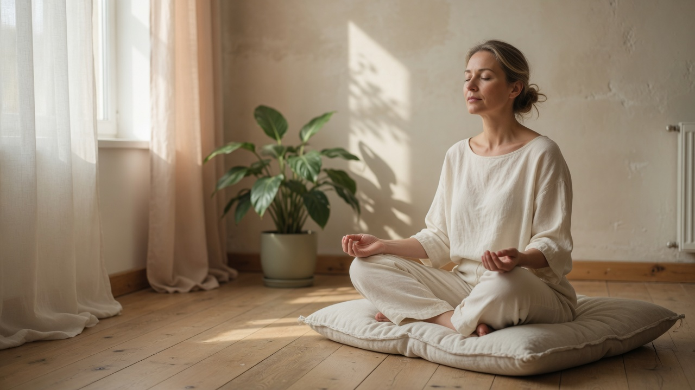
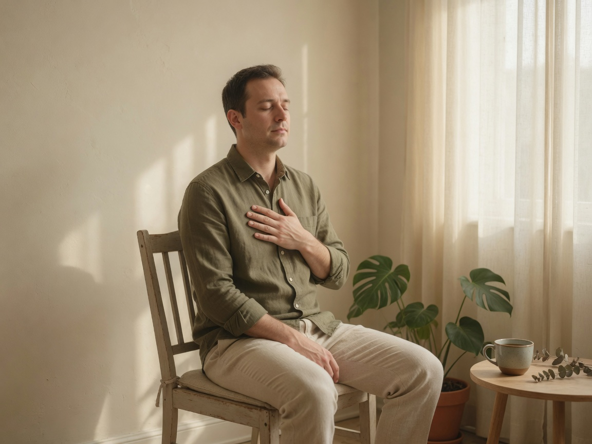
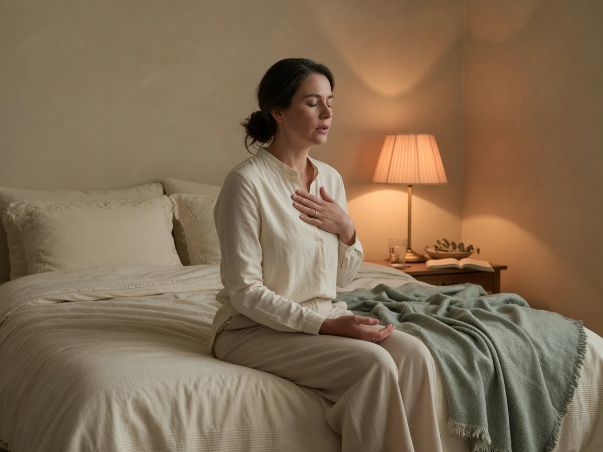
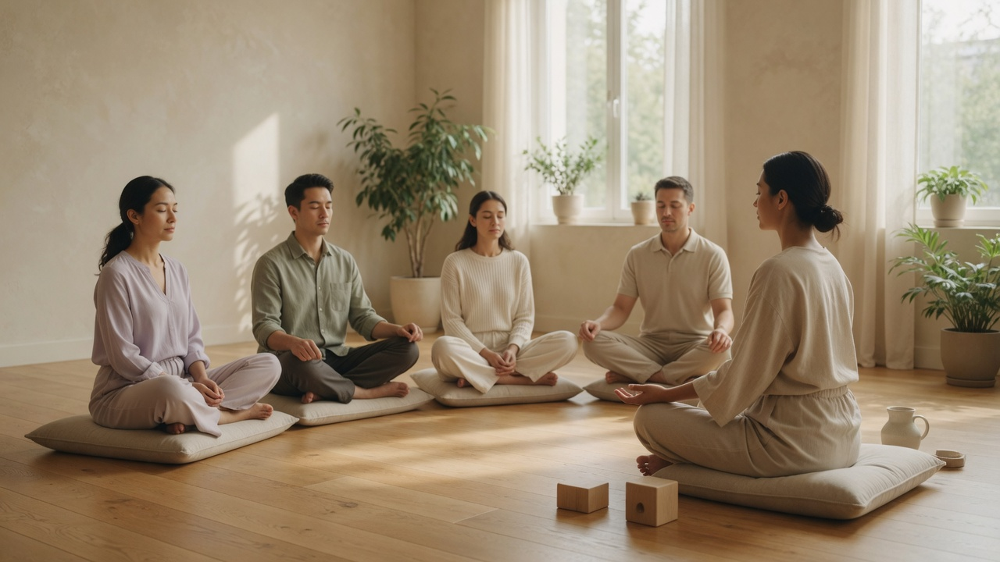

Мысли не отпускают ночью
Тело уже в постели. Голова всё ещё доигрывает день.
Концепт онлайн-школы осознанности
Пятнадцать минут в день. Один протокол.

Проблема
Тело уже в постели. Голова всё ещё доигрывает день.
Слышите первое предложение. Остальное — уже в другом месте.
Несколько упорных утр, один пропуск — и всё снова ноль.
Метод
Четыре шага. Одна практика, которая выдерживает настоящую неделю.
Пятнадцать минут в одном ритме — чтобы привычка знала дверь.
Два раза в неделю. Восемь человек. Практикуете вместе, а не в ленте.
Преподаватель слышит, как прошла неделя, и подстраивает протокол.
Курс заканчивается. Пятнадцать минут остаются — уже без нас.
Ритм и формат
2
Эфиры в неделю
15
Минут в день
1
Наставник
8
Малая группа
Попробовать
Напишите, что делает неделя. Два ответа. Дальше — дыхание.
Демонстрация сессии · ответы никуда не уходят
Где сейчас сидит шум — в груди, в челюсти или в почте?
Демонстрационная версия: ответы остаются в браузере и никуда не отправляются.
Восемь модулей
Каждый модуль заканчивается результатом на рабочей неделе.
Вы умеете удлинять выдох — и чувствуете, как система отпускает.
Замечаете напряжение, пока оно ещё маленькое, а не когда уже болит голова.
Девяносто секунд между встречами — до того, как всплеск станет днём.
Вечерний ритуал. Дню есть куда деться, кроме подушки.
Один рабочий блок без нажима. Начинаете, держите и останавливаетесь сами.
Слышите фразу напротив, а не ту, которую уже пишете в голове.
Почта подождёт девяносто секунд. Возвращаетесь без зажима в плечах.
Последний модуль — вы одни. Пятнадцать минут стоят без преподавателя и без серии.
Курсы
Живые группы встречаются каждую неделю. Самостоятельный формат — те же уроки и практики. Библиотека остаётся с вами.

Для тех, кто «в порядке», пока не становится не в порядке. Восемь недель дыхания и внимания: ниже базовое возбуждение, глубже сон, меньше жизни на одно уведомление вперёд.
От 5 999 ₽/мес
Смотреть тарифыТренировка внимания для тех, кто и так уже на кофе. Как начать, удержать и закончить блок работы, не выжимая нервную систему.
От 5 999 ₽/мес
Смотреть тарифы
Короткий курс для ума в 21:00, который не умеет остановиться. Дыхание, свет и ритуал закрытия дня — без очередного трекера сна.
От 5 999 ₽/мес
Смотреть тарифыИзображения и описания курсов используются исключительно в демонстрационном проекте.
Тарифы
Раз в месяц. Первая неделя бесплатно. Отмена в любой момент.
Самостоятельно
5 999 ₽ / мес.
Чаще выбирают
Группа
8 999 ₽ / мес.
С наставником
14 999 ₽ / мес.
Цены и условия демонстрационные. Кнопки открывают форму заявки — оплаты на сайте нет.
Преподаватели
Solara ведут люди, а не алгоритм. У каждого курса есть имя преподавателя — с клинической, созерцательной или исследовательской практикой. И часы, на которые можно записаться.
Осознанность · Ведущая курса «Перезагрузка»
Шестнадцать лет учит вниманию людей, у которых нет лишних часов. Раньше — стратег-консультант. Школы MBSR и Insight.
Дыхательные практики · Физиология
Преподаватель дыхания с бэкграундом в клинической психофизиологии. Собирает ежедневные протоколы: что делать, сколько и почему это работает, когда вы уже устали.
Клиническая психология · Сон и внимание
Клинический психолог. Курирует программу по тревоге, бессоннице и границе между курсом и терапией. Приём для тех, кому нужна клиническая рекомендация.
Педагоги, биографии и портреты вымышлены и приведены только для демонстрации.

Живая группа
Самостоятельный формат самодостаточен. Живая группа добавляет семинар и закрытый круг — если нужна дисциплина присутствия, но не спектакль ретрита.
Следующий набор «Перезагрузки» — 8 сентября 2026.
С курсов
«Я не стал другим человеком. Я перестал приходить домой уже выжатым. Эти пятнадцать минут почти скучные — поэтому я их и держу.»
«Solara я рекомендую коллегам так же, как хорошую тетрадь: точно, по-взрослому, без благовоний. Дыхательный протокол перед ночной сменой теперь в моём наборе.»
«Приложения я пробовала. Это курс. Кто-то ведёт. Эта разница оказалась важнее, чем я думала, когда неделя снова стала громкой.»
Истории и имена вымышлены. Это примеры тона отзывов, а не реальные цитаты.
Гарантия
Пройдите первые две недели. Если метод не занял место в дне, напишите нам. Вернём полную сумму — любой тариф. Без викторины и нотаций.
Условия возврата приведены для демонстрации интерфейса и не являются офертой.
Вопросы
Пятнадцать минут в день, два эфира в неделю и один созвон с наставником на тарифе «С наставником». Пропустили день — продолжаете. Мы не обнуляем вас.
Нет. Solara — образование. В команде есть клинический психолог: если курс не тот формат, направим дальше.
Приложение даёт библиотеку. Solara даёт программу, преподавателя и практику с понятной формой. Вы всегда знаете, что делать завтра.
Достаточно стула. Несколько протоколов рассчитаны на машину у обочины, закрытую дверь кабинета или край кровати.
Самостоятельный формат — в день заявки. Следующая живая группа открывается 8 сентября 2026. Первая неделя бесплатна на любом тарифе.
Ничего не отправляется: Solara — вымышленный концепт для портфолио. Форма показывает, как могла бы работать заявка на курс. Данные не сохраняются.
Solara · portfolio concept
Вымышленный лендинг онлайн-школы осознанности для портфолио. Его задача — показать структуру, тон и сценарии интерфейса, а не рекламировать реальный курс.